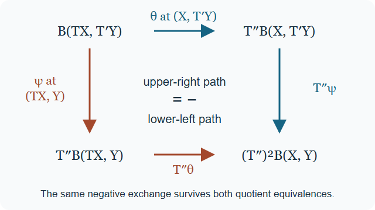

Draft lesson.
Localizing triangulated functors and signed bifunctors
Written by GPT-6.1 Sol (OpenAI), reasoning effort Ultra, October 2026. Public domain (CC0).
A functor can be evaluated on suitable replacement objects even when it fails to invert denominators on arbitrary objects. The replacement construction must preserve more than object values: its translation comparison, the connecting arrow of each triangle, and the unit that identifies the replacement value all matter. For two inputs there are two comparisons, and their odd exchange has a minus sign.
We use the complete fraction, quotient and replacement proofs in Null systems, roofs and the retract kernel, especially Sections 2, 6 and 8. Descent through replacement objects proves the underlying universal localization theorem. Localizing functors through formal objects proves its formal representability criterion and the product calculus. The signed shift conventions are those of Translations, coherent powers and universal triangle comparisons. These interfaces apply to arbitrary triangulated categories; no boundedness, enough-injectives or target-colimit assumption enters the theorems below.
1. Keep the quotient target in the data
Let \(D,D',D''\) be triangulated categories, with translations \(T,T',T''\). Let \(N,N',N''\) be null systems. Thus each is full and closed under isomorphisms, contains zero, is stable under translation in both directions, and satisfies triangle two-out-of-three. Retract closure is not required. Write
\[ L=D/N,\qquad L'=D'/N',\qquad L''=D''/N'', \]and \(Q,Q',Q''\) for the quotient functors. The denominator class \(W_N\) consists of arrows with a distinguished cone in \(N\); write \(W_{N'},W_{N''}\) similarly. The quotient lesson proves both calculi for these actual classes, including when \(W_N\) is smaller than the class of all arrows inverted by \(Q\).
An exact, or triangulated, functor \(F:D\to D'\) includes its specified natural isomorphism
\[ \xi^F_X:F(TX)\longrightarrow T'F(X). \tag{1.1} \]It is additive and sends a distinguished triangle \(X\xrightarrow fY\xrightarrow gZ\xrightarrow hTX\) to the distinguished triangle with last map \(\xi^F_X F(h)\). For another such functor \(H\), a compatible transformation \(a:F\to H\) satisfies
\[ \xi^H_X a_{TX}=T'(a_X)\xi^F_X. \tag{1.2} \]Quotient comparisons are understood in all formulas involving a shift. In the fraction model they identify \(Q(TX)\) with \(T_L(QX)\). Put \(\bar F=Q'F:D\to L'\); its comparison is the composite of (1.1) with the comparison of \(Q'\).
All indexing categories and functor categories are taken in a sufficiently large ambient universe. This does not impose cofinal smallness in the original universe of Hom sets. A formal filtered object below is a presheaf colimit in that ambient universe, not an assertion that its values have a colimit in \(L'\).
2. Universal values and the direction of the comparison
For \(X\in D\), let \(O_X\) have objects denominators \(s:X\to X_s\), and arrows \(a:s\to t\) with \(as=t\). It is filtered. The formal right value is
\[ \mathbb R\bar F(QX) =\operatorname{colim}_{s\in O_X}h_{\bar F(X_s)}, \qquad h_B=\operatorname{Hom}_{L'}(-,B). \tag{2.1} \]We call \(F\) right localizable relative to \((N,N')\) when every value in (2.1) represents an object of \(L'\). The representing functor is denoted \(R_N^{N'}F:L\to L'\), or \(RF\), with unit
\[ \tau^F:\bar F\longrightarrow RF\,Q. \tag{2.2} \]The formal localization theorem supplies, for every ordinary functor \(G:L\to L'\), the bijection
\[ \operatorname{Nat}(RF,G) \simeq\operatorname{Nat}(\bar F,GQ), \qquad a\longmapsto aQ\,\tau^F. \tag{2.3} \]It remains a localization after every further functor \(K:L'\to B\), with unit \(K\tau^F\). This is why representability of the formal object, rather than existence of an ordinary colimit alone, is the criterion. The proof and a counterexample to the weaker criterion are in the formal localization lesson, Sections 2–3 and Exercise 4.
For the left version use the cofiltered category \(P_X\) of denominators \(s:X_s\to X\). Its arrow from \(s\) to \(t\) is a map \(a:X_s\to X_t\) with \(ta=s\). The corresponding formal pro-object must be constant. Write \(LF:L\to L'\) for its represented value. Its counit and universal property have the opposite directions:
\[ \sigma^F: LF\,Q\longrightarrow\bar F, \qquad \operatorname{Nat}(G,LF) \simeq\operatorname{Nat}(GQ,\bar F). \tag{2.4} \]Postcomposition by every \(K\) preserves this property too. These are the full dual statements proved in Section 5 of the formal localization lesson.
Lemma 2.1. A universally localized functor with input comparison (1.1) has a canonical translation comparison, characterized in the right case by
\[ \xi^{RF}_{QX}\tau^F_{TX} =T_{L'}(\tau^F_X)\xi^{\bar F}_X. \tag{2.5} \]In the left case its characterization is
\[ \xi^{\bar F}_X\sigma^F_{TX} =T_{L'}(\sigma^F_X)\xi^{LF}_{QX}. \tag{2.6} \]These comparisons and the units or counits are independent of representing choices, under the unique localization isomorphism.
Proof. The equivalences \(T,T_L\), with \(QT\simeq T_LQ\), imply that \(RF\,T_L\), with unit \(\tau^F T\), localizes \(\bar F T\). To see this at the level of the universal property, transport a target functor through a chosen inverse of \(T_L\), apply (2.3), and transport the resulting transformation through the inverse of \(T\). The unit and counit identities for those inverses make these transports mutually inverse. Thus the resulting bijection is precisely composition with \(\tau^F T\), including the comparisons \(QT\simeq T_LQ\).
Universality under the further functor \(T_{L'}\) says that \(T_{L'}RF\), with unit \(T_{L'}\tau^F\), localizes \(T_{L'}\bar F\). The input isomorphism \(\xi^{\bar F}:\bar F T\to T_{L'}\bar F\) identifies these two source functors. The unique map between their universal pairs is \(\xi^{RF}:RF\,T_L\to T_{L'}RF\); its defining unit equation is (2.5). The inverse input isomorphism gives its inverse, since their two composites have the same unit as the appropriate identity. This proves naturality and invertibility without strict inverse translations. The coherent inverse transports are proved in the translation lesson, Sections 1–2.
Apply the same argument to the counit universal property (2.4) to get (2.6). Uniqueness of maps between universal pairs proves the final assertion. This lemma supplies translation data; distinguishedness of the image triangles in the replacement construction is proved next. \(\square\)
3. Full triangulated families that compute the value
A full triangulated subcategory \(I\subset D\), with its inherited distinguished triangles, is F-injective relative to \((N,N')\) if
\[ \begin{gathered} \text{every }X\in D\text{ has }s:X\to Y\text{ in }W_N \text{ with }Y\in I,\\ F(I\cap N)\subset N'. \end{gathered} \tag{3.1} \]The name records these two properties; it does not assert that its objects are injective objects of an abelian category. The F-projective definition replaces the first line by denominators \(Y\to X\), with \(Y\in I\), and keeps the second line. A full triangulated subcategory need not be closed under ambient isomorphisms. Its intersection with \(N\) is replete within that subcategory. If \(F(N)\subset N'\), the whole \(D\), with identity replacements, satisfies both definitions.
Theorem 3.1. An F-injective subcategory gives a universally right localizable \(F\). Its localization is additive and triangulated, with the comparison of Lemma 2.1. Every outgoing replacement \(s:X\to Y\), \(Y\in I\), gives the particular isomorphism
\[ \bar F(Y)\xrightarrow{\ \tau^F_Y\ }RF(QY) \xrightarrow{\ RF(Qs)^{-1}\ }RF(QX). \tag{3.2} \]The unit is compatible with translation. An F-projective subcategory gives the full left counterpart, with the particular isomorphism
\[ LF(QX)\xrightarrow{\ LF(Qs)^{-1}\ }LF(QY) \xrightarrow{\ \sigma^F_Y\ }\bar F(Y), \qquad s:Y\to X. \tag{3.3} \]Both universal properties also identify the compatible natural transformations between triangulated functors.
Proof. Put \(M=I\cap N\). The exact quotient theorem and replacement equivalence give
\[ E:I/M\longrightarrow L \quad\text{an exact equivalence}. \tag{3.4} \]This uses the actual cone class in \(I\): its intrinsic denominators are exactly \(W_N\cap\operatorname{Mor}(I)\). Fullness and comparison of completions prove this equality, as checked in Section 8 of the quotient lesson. In particular it is valid without retract closure of \(N\).
The exact functor \(\bar F|_I\) kills \(M\). It therefore descends, with its specified shift comparison, to the exact functor
\[ \widehat F:I/M\longrightarrow L'. \tag{3.5} \]Choose a quasi-inverse \(W:L\to I/M\) and counit \(e:EW\to1_L\). If \(\theta:ET_{I/M}\to T_LE\) is E's comparison, the inverse has the comparison \(\chi:WT_L\to T_{I/M}W\) determined by
\[ E(\chi_A) =\theta_{WA}^{-1}(T_Le_A)^{-1}e_{T_LA}. \tag{3.6} \]The quotient lesson proves that this is natural and invertible, that \(W\) is additive and exact, and that every proposed triangle lifts by triangle reflection. Thus the construction does not infer exactness of an inverse merely from its equivalence on objects.
Set \(R=\widehat F W\). Its comparison is the actual composite
\[ R(T_LA)\xrightarrow{\widehat F(\chi_A)} \widehat F(T_{I/M}WA) \xrightarrow{\xi^{\widehat F}_{WA}}T_{L'}R(A). \tag{3.7} \]Both factors are exact, so \(R\) sends all the maps of a distinguished triangle, including the last map with (3.7), to a distinguished triangle. It is additive as a composite of additive functors.
We now apply the ordinary replacement theorem with source \(D\), denominator class \(W_N\), target \(L'\), and functor \(\bar F\). It has precisely the required hypotheses. Every source object has the outgoing replacement in (3.1). If a denominator has both endpoints in \(I\), complete it inside \(I\). Its cone is in \(M\), so its image under \(\bar F\) is zero, and its image arrow is invertible by the zero-cone criterion in \(L'\). Consequently the theorem gives \(R\), with a unit \(\tau:\bar F\to RQ\), as a universal ordinary right localization, after every further functor. Its restriction to \(I\) is the identification from (3.5) and the equivalence (3.4). This proves formal representability by the criterion of Section 2, without assuming filtered colimits in \(L'\).
For clarity, the unit on an arbitrary object can be recovered from any chosen replacement:
\[ \tau_X=R(Qs)^{-1}\tau_Y\bar F(s). \tag{3.8} \]The restriction-of-transformations proof in the replacement lesson, Section 3, proves that this expression is independent of the choice and is natural. It uses an outgoing Ore square followed by a further replacement of its target; the two resulting arrows inside \(I\) compare the choices. It does not assume a functorial assignment \(X\mapsto Y\).
The identification \(\tau|_I\) is translation compatible. Indeed (3.6) makes \(e\) compatible: after applying E's comparison, its equation is exactly
\[ (T_Le_A)\theta_{WA}E(\chi_A)=e_{T_LA}. \]The other equivalence identification is compatible too: apply the faithful \(E\) to its comparison equation and use this equation for \(e\) and the equivalence triangle identities. Its image is the same equality. Applying the exact \(\widehat F\) therefore gives compatibility of \(\tau|_I\) with (3.7).
For general \(X\), use \(s:X\to Y\) from (3.1) and its translated denominator \(Ts\). Naturality of \(\tau\) at \(s,Ts\) and of the comparisons makes the two sides of (2.5), with comparison (3.7), equal after postcomposition by the invertible map \(T_{L'}R(Qs)\): the remaining equality is the one at \(Y\in I\). Cancel that map. This proves (2.5) for every \(X\), so uniqueness in Lemma 2.1 identifies (3.7) with its canonical comparison. Naturality at \(s\) also proves the value formula (3.2) and specifies which isomorphism computes the value.
In the incoming case (3.4) is again an exact equivalence, by the separately proved incoming replacement theorem in the quotient lesson. Use the same construction (3.5)–(3.7). The dual ordinary replacement theorem gives its counit \(\sigma:RQ\to\bar F\), with an isomorphism on \(I\). At an incoming replacement \(s:Y\to X\), naturality forces
\[ \sigma_X=\bar F(s)\sigma_Y R(Qs)^{-1}. \tag{3.9} \]The dual Ore comparison proves independence and naturality, just as in the dual restriction theorem. The comparison (3.7) is exact for the same two compositional reasons. Translation compatibility on \(I\), followed by naturality at \(s,Ts\) and cancellation of the invertible localized map, proves (2.6) everywhere. Formula (3.3) follows. This proves the incoming theorem without imposing a strict inverse translation or an opposite sign convention on the original categories.
Finally (2.3) carries a compatible transformation \(a:RF\to G\) to a compatible transformation \(aQ\,\tau^F\). Conversely, if that composite is compatible, compare the two candidate maps from \(RF\,T_L\) to \(T_{L'}G\). Their composites with \(\tau^F T\) agree by compatibility and (2.5). The injective part of the universal property for the shifted source, proved in Lemma 2.1, makes the two maps equal. This is exactly (1.2) for \(a\). The counit property proves the left assertion by the same injectivity on maps into \(LF\,T_L\). Thus the ordinary universal property restricts to the structured one. \(\square\)
4. The specified map for a composition
Let \(F:D\to D'\), \(G:D'\to D''\) be exact. Suppose \(RF,RG,R(GF)\) are universally defined relative respectively to \((N,N')\), \((N',N'')\), and \((N,N'')\). Their units are
\[ \begin{aligned} \alpha &:Q'F\longrightarrow RFQ,\\ \beta &:Q''G\longrightarrow RGQ',\\ \gamma &:Q''GF\longrightarrow R(GF)Q. \end{aligned} \]The composite transformation
\[ \delta=(RG\,\alpha)(\beta F): Q''GF\longrightarrow RG\,RFQ \tag{4.1} \]has the indicated domain: \(\beta F\) first reaches \(RGQ'F\). The universal property of \(R(GF)\) gives the unique natural map
\[ c:R(GF)\longrightarrow RG\,RF, \qquad cQ\,\gamma=\delta. \tag{4.2} \]This constructs naturality as part of a bijection of natural-transformation sets, not from a collection of unrelated object isomorphisms. With the comparisons of Lemma 2.1, \(c\) is compatible. Indeed both units in (4.1) are compatible, so their whiskered composite is compatible with the composite shift comparison of \(RG\,RF\). The two sides of the compatibility equation for \(c\) agree after precomposition with \(\gamma T\). The injectivity for that shifted universal pair, exactly as at the end of Theorem 3.1, proves their equality.
Theorem 4.1. Suppose \(I\subset D\) is F-injective, \(I'\subset D'\) is G-injective, and \(F(I)\subset I'\). Then \(I\) is GF-injective and the particular map (4.2) is an isomorphism of triangulated functors.
Proof. The outgoing replacements for \(I\) are unchanged. If \(A\in I\cap N\), then \(F(A)\in N'\) by its adaptation and \(F(A)\in I'\) by the additional hypothesis. Hence \(GF(A)\in N''\). These are both adaptation requirements, including the target null system. Theorem 3.1 constructs all three exact localizations and their compatible units.
For \(Y\in I\), the maps \(\alpha_Y\) and \(\gamma_Y\) are isomorphisms. Since \(FY\in I'\), \(\beta_{FY}\) is an isomorphism as well. Evaluating the defining equation (4.2) at \(Y\) gives the actual formula
\[ c_{QY}=RG(\alpha_Y)\,\beta_{FY}\,\gamma_Y^{-1}. \tag{4.3} \]Every factor is invertible. For arbitrary \(X\), choose \(s:X\to Y\), \(Y\in I\). Naturality gives
\[ c_{QX}=(RG\,RF)(Qs)^{-1} \,c_{QY}\,R(GF)(Qs). \tag{4.4} \]The outer maps are invertible because \(Qs\) is. Thus every component of this specified \(c\) is invertible. Its inverse is natural by multiplying the naturality equation by component inverses; the same operation in (1.2) proves its compatibility. \(\square\)
For projective replacements the comparison direction reverses. With counits \(\alpha:LFQ\to Q'F\), \(\beta:LGQ'\to Q''G\), and \(\gamma:L(GF)Q\to Q''GF\), form
\[ (\beta F)(LG\,\alpha):LG\,LFQ\longrightarrow Q''GF. \]Property (2.4) supplies \(c_L:LG\,LF\to L(GF)\) characterized by \(\gamma(c_LQ)=(\beta F)(LG\,\alpha)\). For projective \(I,I'\) with \(F(I)\subset I'\), the same null-image argument makes \(I\) GF-projective. At \(Y\in I\) the formula is
\[ (c_L)_{QY}=\gamma_Y^{-1}\beta_{FY}LG(\alpha_Y), \]so it is invertible there. Naturality along an incoming replacement gives invertibility everywhere. The counit comparison equations prove compatibility by shifted universal injectivity. Existence of the three localizations alone does not make the comparison invertible; Exercise 2 gives a complete counterexample.
5. Two shifts, with their actual negative exchange
A triangulated bifunctor \(B:D\times D'\to D''\) is separately additive and has natural isomorphisms
\[ \theta_{X,Y}:B(TX,Y)\longrightarrow T''B(X,Y), \qquad \psi_{X,Y}:B(X,T'Y)\longrightarrow T''B(X,Y) \tag{5.1} \]with the exact equation
\[ T''(\psi_{X,Y})\theta_{X,T'Y} =-T''(\theta_{X,Y})\psi_{TX,Y}. \tag{5.2} \]Both paths start at \(B(TX,T'Y)\) and end at \((T'')^2B(X,Y)\). For every fixed other input, the functor is triangulated with its own comparison. In particular the image of a first-variable triangle has last map \(\theta_{X,Y}B(h,1_Y)\), and the image of a second-variable triangle has last map \(\psi_{X,Y}B(1_X,h')\). A bifunctor is not generally additive as a functor on the product category: its formula on pairs of arrows is bilinear, not linear on their direct-product group.

Figure 1. The upper path first uses the first-variable comparison and then the translated second-variable comparison. The lower path uses them in the reverse order. Equation (5.2) identifies the paths with opposite signs. The descended comparisons in (6.7) retain exactly this equation. Original diagram by the SH-01 course author.
Put \(\bar B=Q''B\). Incorporating Q''s comparison in (5.1) gives comparisons with target \(T_{L''}\bar B\), and (5.2) still holds because \(Q''\) is additive and its comparison is natural.
The outgoing product calculus in the formal localization lesson, Section 4, gives
\[ (D\times D')[(W_N\times W_{N'})^{-1}] \simeq L\times L'. \tag{5.3} \]At \((X,Y)\) its denominator index is the independent product \(O_X\times O'_Y\). We call \(B\) right localizable relative to \((N,N',N'')\) when
\[ \operatorname{colim}_{(s,t)\in O_X\times O'_Y} h_{\bar B(X_s,Y_t)} \tag{5.4} \]is representable for every pair. Write
\[ R_{N\times N'}^{N''}B:L\times L'\longrightarrow L'', \qquad \tau:\bar B\longrightarrow RB(Q\times Q'). \tag{5.5} \]The universal property holds for all ordinary target functors on \(L\times L'\), and survives every further functor from \(L''\), by the same formal theorem. Left localizability uses \(P_X\times P'_Y\), a formal pro-object, and counit \(LB(Q\times Q')\to\bar B\). This keeps both indices and the third null system; one index cannot be replaced silently by the other.
6. Adapted pairs and the signed descent
Let \(I\subset D\), \(I'\subset D'\) be full triangulated subcategories. We call the pair B-injective relative to \((N,N',N'')\) if, for every \(Y\in I\), \(I'\) is adapted to \(B(Y,-)\), and, for every \(Y'\in I'\), \(I\) is adapted to \(B(-,Y')\), in the sense of (3.1).
Equivalently the conditions are
\[ \begin{gathered} \text{every }X\in D\text{ has }X\to Y\text{ in }W_N,\quad Y\in I,\\ \text{every }X'\in D'\text{ has }X'\to Y'\text{ in }W_{N'},\quad Y'\in I',\\ B(I\cap N,I')\subset N'',\qquad B(I,I'\cap N')\subset N''. \end{gathered} \tag{6.1} \]Indeed separate adaptation gives each replacement condition by fixing the zero object of the other full triangulated subcategory, and gives the two null-image inclusions by fixing any of its objects. Conversely those replacements work for every fixed object, and the corresponding inclusion is exactly its required null-image condition. No generation or abelian injectivity hypothesis is hidden in this equivalence. A B-projective pair uses incoming replacements in both first lines, with the same null-image inclusions.
Theorem 6.1. A B-injective pair gives a universal right localization \(RB\) which is a triangulated bifunctor, with the signed exchange (5.2). For each pair of outgoing replacements \(s:X\to Y\), \(t:X'\to Y'\), \(Y\in I,Y'\in I'\), its value is computed by the actual isomorphism
\[ \bar B(Y,Y')\xrightarrow{\tau_{Y,Y'}}RB(QY,Q'Y') \xrightarrow{RB(Qs,Q't)^{-1}}RB(QX,Q'X'). \tag{6.2} \]The two unit comparison equations retain the last maps in each variable. The projective version gives a universal left localized triangulated bifunctor, with counit and the corresponding reversed replacement formula.
Proof. Put \(M=I\cap N\), \(M'=I'\cap N'\). The quotient equivalences in Theorem 3.1 are
\[ E:I/M\xrightarrow{\sim}L, \qquad E':I'/M'\xrightarrow{\sim}L'. \tag{6.3} \]For an intrinsic denominator \(a\) in \(I\) and a fixed \(Y'\in I'\), the triangle of \(a\) has cone in \(M\). Its image under the exact functor \(\bar B(-,Y')\) has zero cone by (6.1), so \(\bar B(a,1_{Y'})\) is invertible. The other inclusion proves invertibility for \(\bar B(1_Y,b)\), where \(b\) is intrinsic in \(I'\). Since \(\bar B(a,b)\) is a composite of these two maps, it too is invertible.
The ordinary product localization therefore gives the descended functor
\[ \widehat B:(I/M)\times(I'/M')\longrightarrow L''. \tag{6.4} \]It is separately additive and exact. For example, fix an object represented by \(Y'\in I'\). The first-variable functor in (6.4) is the exact descent of \(\bar B(-,Y')\), by the structured quotient universal property. The same statement with the variables reversed proves exactness in the second. Naturality of these comparisons holds not only for original arrows but for every inverse denominator, since the naturality equation for an invertible image can be multiplied by its inverse. Every localized arrow is a fraction, so the comparisons descend jointly. Their signed equation descends too: its two natural transformations agree after restriction to \(I\times I'\), where it is (5.2); restriction along the product localization is faithful. This proves the full bifunctor structure on \(\widehat B\), including the negative exchange.
Choose the structured quasi-inverses \(W,W'\) of (6.3), with comparisons \(\chi:WT_L\to T_{I/M}W\), \(\chi':W'T_{L'}\to T_{I'/M'}W'\). Define
\[ RB=\widehat B(W\times W'). \tag{6.5} \]Its first and second comparisons, with \(A\in L,A'\in L'\), are explicitly
\[ \begin{aligned} \Theta_{A,A'}&=\widehat\theta_{WA,W'A'}\, \widehat B(\chi_A,1),\\ \Psi_{A,A'}&=\widehat\psi_{WA,W'A'}\, \widehat B(1,\chi'_{A'}). \end{aligned} \tag{6.6} \]The functor is separately additive and exact because each fixed-variable functor is a composite of the exact functors just constructed and an exact \(W\) or \(W'\). For the last arrow of a first-variable triangle, the comparison in the composite is exactly the first line of (6.6); the second-variable statement uses its second line.
We check the exchange, rather than imposing it anew. Both routes from \(RB(T_LA,T_{L'}A')\) can first apply the same map \(\widehat B(\chi_A,\chi'_{A'})\). Functoriality of \(\widehat B\) and naturality of \(\widehat\theta,\widehat\psi\) move the individual \(\chi\) maps into this common initial map. The remaining routes are
\[ T_{L''}(\widehat\psi_{WA,W'A'})\, \widehat\theta_{WA,T_{I'/M'}W'A'} \]and
\[ T_{L''}(\widehat\theta_{WA,W'A'})\, \widehat\psi_{T_{I/M}WA,W'A'}. \]They are negatives by the descended equation for \(\widehat B\). Thus
\[ T_{L''}(\Psi_{A,A'})\Theta_{A,T_{L'}A'} =-T_{L''}(\Theta_{A,A'})\Psi_{T_LA,A'}. \tag{6.7} \]For universality, apply the ordinary replacement theorem to the full subcategory \(I\times I'\) of \(D\times D'\), with denominator system \(W_N\times W_{N'}\) and functor \(\bar B\). Conditions (6.1) give a product denominator replacement of every pair. The intrinsic denominator check above proves that \(\bar B\) inverts each denominator whose two endpoints belong to \(I\times I'\). The ordinary theorem uses no triangulated structure on that product; it gives exactly the functor (6.5), and its unit is an isomorphism on \(I\times I'\). It is universal after every further functor. By the product formal criterion, every value in (5.4) is represented by (6.5).
The unit's two comparison equations are
\[ \begin{aligned} \Theta_{QX,Q'X'}\tau_{TX,X'} &=T_{L''}(\tau_{X,X'})\theta^{\bar B}_{X,X'},\\ \Psi_{QX,Q'X'}\tau_{X,T'X'} &=T_{L''}(\tau_{X,X'})\psi^{\bar B}_{X,X'}. \end{aligned} \tag{6.8} \]On \(I\times I'\) these follow from the two compatible equivalence identifications and the comparisons of (6.4), as in Theorem 3.1. For arbitrary \((X,X')\), choose the pair \((s,t)\) of replacements. Naturality at that pair and its first-variable translate reduces the first equation to its equation at \((Y,Y')\), after an invertible target comparison. The second-variable translate gives the second equation by the same cancellation. This verifies both equations everywhere. Naturality at \((s,t)\) gives (6.2), including which value identification is intended.
For a projective pair, use the two incoming exact quotient equivalences and the same descent (6.4). Its comparisons and (6.7) have the same signs, because no translation has been replaced. The dual ordinary product replacement theorem gives the counit, isomorphic on \(I\times I'\). The analogous equations follow by naturality along the pair of incoming replacements and their individual translates. For \(s:Y\to X,t:Y'\to X'\), the value isomorphism is
\[ LB(QX,Q'X')\xrightarrow{LB(Qs,Q't)^{-1}} LB(QY,Q'Y')\xrightarrow{\sigma_{Y,Y'}}\bar B(Y,Y'). \]All hypotheses of the dual ordinary theorem and both exact inverses have been checked, so this proves the full left claim. \(\square\)
7. A single uniform replacement family suffices
Corollary 7.1. Suppose \(I\subset D\) is full triangulated, is B(-,Y)-injective relative to \((N,N'')\) for every \(Y\in D'\), and
\[ B(I,N')\subset N''. \tag{7.1} \]Then \(B\) is right localizable relative to \((N,N',N'')\), its localization is a triangulated bifunctor, and naturally
\[ RB(QX,Q'Y)\simeq R_N^{N''}(B(-,Y))(QX). \tag{7.2} \]The comparisons, units and their odd exchange are retained. There is a full projective counterpart with incoming replacements and left localizations.
Proof. Use the pair \((I,D')\) in (6.1). Identity denominators give every second-variable replacement. Uniform adaptation gives the first-variable replacements and \(B(I\cap N,D')\subset N''\). Condition (7.1) gives the other null-image inclusion. Hence every requirement of Theorem 6.1 holds.
For fixed \(Y\), Theorem 3.1 gives the universal right localization of \(Q''B(-,Y)\), computed at an outgoing \(s:X\to Z\), \(Z\in I\), by \(Q''B(Z,Y)\). The product theorem, using the same first replacement and the identity denominator of \(Y\), gives exactly that same value. Their identification is the one taking the first-variable unit to the product unit at \((X,Y)\). The construction via the same descended functor and \(W\) proves that these identifications are natural in \(Y\), as well as in localized \(X\).
For completeness, this identification also carries the second-variable denominator action. If \(t:Y\to Y'\) has cone in \(N'\), then \(Q''B(Z,t)\) is invertible for every \(Z\in I\), since its distinguished cone is killed by (7.1). The universal extension of \(Q''B(-,t)\) therefore induces an isomorphism between the first-variable localized functors: its component at each replacement \(Z\) is that invertible map, and naturality along \(Qs\) proves invertibility at arbitrary \(QX\). Thus this family descends to \(L'\). Its comparisons and units identify with those from Theorem 6.1 by their prescribed equations on \(I\times D'\) and faithfulness of restriction through the two quotient equivalences. This proves (7.2) with its structured naturality, rather than only equality of object values.
For incoming uniform adaptation the pair \((I,D')\) is projective, again with identity second replacements and exactly the same two null-image inclusions. The incoming statements of Theorems 3.1 and 6.1 give the analogous natural identification using the counits. The denominator and comparison checks just made apply with incoming first replacements and their invertible \(Qs\). \(\square\)
8. Two explicit models
Product replacements. Let \(A,C\) be any triangulated categories and give \(D=A\times C\) the coordinatewise triangulation. Put \(N=0\times C\), \(I=A\times0\), \(D'=D\), \(N'=0\), and \(F=1_D\). The quotient lesson, Example 10.2, identifies \(D/N\) with \(A\). Projection \((X,U)\to(X,0)\) has cone \((0,T_CU)\), and inclusion \((X,0)\to(X,U)\) has cone \((0,U)\); both belong to \(W_N\). The intersection \(I\cap N\) consists of zero objects, so \(I\) is both F-injective and F-projective even though F does not kill all of \(N\).
Consequently both localized functors \(A\to A\times C\) are \(X\mapsto(X,0)\). Their unit and counit on \((X,U)\) are respectively that projection and that inclusion. The comparison \(LF\to RF\), obtained by composing the counit and unit and descending, is the identity of \((X,0)\). Neither of the maps on an object with nonzero \(U\) is an isomorphism in \(D\). This is an actual computation with replacements, not descent of F on all source denominators.
A signed tensor model. Let \(k\) be a field and \(A=K^b(\mathsf{Vect}^{\mathrm{fd}}_k)\). The homotopy and cone lesson proves its triangulation. The finite total tensor complex has
\[ (X\otimes Y)^n=\bigoplus_{p+q=n}X^p\otimes_kY^q, \qquad d(x\otimes y)=dx\otimes y+(-1)^p x\otimes dy. \tag{8.1} \]All sums are finite. Its square-zero differential, chain-map laws and the comparisons
\[ \theta:X[1]\otimes Y\to(X\otimes Y)[1],\quad x\otimes y\mapsto x\otimes y, \] \[ \psi:X\otimes Y[1]\to(X\otimes Y)[1],\quad x\otimes y\mapsto(-1)^p x\otimes y \tag{8.2} \]are explicitly verified in the translation lesson, Section 3, including (5.2).
It is a bifunctor on homotopy categories. A homotopy \(h:X\to X'\) of degree minus one tensors in the first variable as \(H=h\otimes1\). In \(dH+Hd\), the terms involving the second differential have coefficients \((-1)^{p-1}\) and \((-1)^p\), so cancel. The remaining expression is \((d_{X'}h+hd_X)\otimes1\). In the second variable a homotopy \(r:Y\to Y'\) tensors as \(R(x\otimes y)=(-1)^p x\otimes r(y)\). The first-differential terms have opposite coefficients, and the remaining expression is \(x\otimes(d_{Y'}r+rd_Y)(y)\). Thus null-homotopic differences remain null-homotopic in either variable. Additivity and the chain-map composition law descend, giving the ordinary bifunctor and its natural comparisons.
It is exact in each variable with precisely (8.2). For \(f:X\to X'\), the cone convention is \(C_f^n=(X')^n\oplus X^{n+1}\), differential \((b,a)\mapsto(d_{X'}b+fa,-d_Xa)\). Regrouping the summands gives an isomorphism
\[ C_f\otimes Y\longrightarrow C_{f\otimes1}. \tag{8.3} \]It is the identity on both blocks. On the shifted X block, the source differential is \(-d_Xa\otimes y+(-1)^p a\otimes d_Yy\), where \(a\in X^{p+1}\); it equals the negative total differential of \(X\otimes Y\). Its off-diagonal term is \(fa\otimes y\). Thus (8.3) is a chain isomorphism. It carries the cone inclusion to the cone inclusion and carries the last map to the cone projection followed by \(\theta\).
For \(g:Y\to Y'\), regroup \(X\otimes C_g\) into \(X\otimes Y'\) and the shifted \(X\otimes Y\). Use the identity on the first block and multiplication by \((-1)^p\) on its component \(X^p\otimes Y^{q+1}\) in the second. The off-diagonal term of its source differential is \((-1)^p x\otimes gy\); the block sign converts it to the cone off-diagonal \((1\otimes g)((-1)^p x\otimes y)\). On the second block, the first-differential term changes its sign because the new first degree is \(p+1\), and the second-differential term has the negative sign of the shifted total differential. Equivalently this is exactly the chain-map calculation for \(\psi\) in (8.2). It gives the chain isomorphism
\[ X\otimes C_g\longrightarrow C_{1\otimes g}, \tag{8.4} \]preserving the first two maps and identifying the last one with the projection followed by \(\psi\). Every distinguished triangle is an isomorphic image of a cone triangle, so (8.3) and (8.4) prove exactness in both variables and retain their connecting maps. This establishes all bifunctor hypotheses, rather than only its shift data.
Now use \(D=D'=A\times A\), \(N=N'=0\times A\), \(I=I'=A\times0\), \(D''=A\), \(N''=0\), and
\[ B((X,U),(Y,V))=X\otimes Y. \tag{8.5} \]Coordinate projection is exact, so (8.1)–(8.4) make this a signed triangulated bifunctor. Product projection and inclusion give both kinds of adapted pair; the null-image inclusions hold because the first coordinate of a null object is zero. Its right and left localizations on \(A\times A\) are both \((X,Y)\mapsto X\otimes Y\), with their inherited comparisons (8.2). In particular the quotient does not turn the negative exchange into a positive one.
9. Four graded exercises with complete solutions
Exercise 1 (basic: all source denominators already descend). Suppose \(F(N)\subset N'\). Identify both universal localizations and their units and counits. Show that the canonical map from the left localization to the right one is an isomorphism, without choosing any abelian injective or projective objects.
Solution. Use \(I=D\); identity denominators supply both replacement conditions and the assumed inclusion supplies the null-image condition. The structured quotient property descends \(Q'F\) to an exact \(\widetilde F:L\to L'\) with its original comparison. Taking this functor with identity identification \(\widetilde FQ=Q'F\) gives both universal properties: restriction along \(Q\) is fully faithful on transformations between functors that invert the denominators, so a transformation to or from \(\widetilde F\) is uniquely its transformation after restriction. An arbitrary further functor preserves these identities, proving universality. Thus \(RF\) and \(LF\) identify with \(\widetilde F\), with invertible unit and counit, by unique unit- or counit-preserving isomorphisms. The map \(LF\to RF\) restricts to \(\tau^F\sigma^F\), which under these identifications is the identity; full faithfulness of restriction makes its descent the identity too. The comparisons are preserved by those unique identifications, by Lemma 2.1.
Exercise 2 (intermediate: a canonical composition map that fails). Let \(A\) be a triangulated category with a nonzero object. Take \(D=D'=A\times A\), \(N=N'=0\times A\), \(D''=A\), \(N''=0\). Set \(F(X,U)=(U,X)\), \(G(Y,V)=V\). Construct all three right localizations by adapted families, compute (4.2), and identify precisely which hypothesis of Theorem 4.1 fails.
Solution. Both F and G are exact by the coordinatewise triangulations, with the coordinate shift comparisons. In D use \(I=A\times0\); in D' use \(I'=A\times0\). The product replacement example supplies their outgoing replacements. Their intersections with the respective null systems consist of zero objects. Hence I is F-injective, I' is G-injective, and I is GF-injective: each functor sends zero to zero. All three right localizations therefore exist by Theorem 3.1.
Identify L and L' with A by first projection. For a replacement \((X,U)\to(X,0)\), \(Q'F(X,0)=Q'(0,X)=0\), so \(RF\) is the zero functor \(A\to A\). On the intermediate replacement \((Y,V)\to(Y,0)\), \(G(Y,0)=0\); hence \(RG=0\) too. But \(GF(X,U)=X\), and its replacement value is X, so \(R(GF)=1_A\), with identity unit under the first-projection identification. The composite (4.1) is zero, since its target is zero. Its uniquely specified comparison is therefore \(c:1_A\to0\), the zero map at every object. At a nonzero object its component cannot be invertible: an inverse would make that object's identity zero. Thus c fails to be an isomorphism despite existence of all three localizations. The missing hypothesis is \(F(I)\subset I'\): it would require \((0,X)\) to lie in \(A\times0\) for every X, contrary to the chosen nonzero object. This also shows why comparing object formulas without their units cannot establish invertibility of the canonical map.
Exercise 3 (advanced: the two tensor cone comparisons). In the signed tensor model, take \(k\) of characteristic different from two. Determine the two shift paths on \(k[0],k[0]\). Verify the off-diagonal and last-map signs in (8.4). Explain why replacing the signed exchange by a commuting square cannot describe its localized bifunctor.
Solution. In \(k[1]\otimes k[1]\) both generators have degree minus one, and their tensor has degree minus two. The path through \(\theta_{k,k[1]}\) and then the shifted \(\psi_{k,k}\) has coefficient \(1\), since \(\psi\) sees the unshifted first degree zero. The other path applies \(\psi_{k[1],k}\) first; it sees first degree minus one and has coefficient \(-1\). The remaining \(\theta\) is the identity. Both paths land in \((k\otimes k)[2]\), in degree minus two. They are negatives, and they are unequal because the characteristic is not two.
For general homogeneous \(x\in X^p\), \(y\in Y^{q+1}\) in the cone's second block, write c for the regrouping map of (8.4). The first block of \(c\,d(x\otimes(0,y))\) is \((-1)^p x\otimes gy\). The first block of \(d\,c(x\otimes(0,y))\) is \((1\otimes g)((-1)^p x\otimes y)\), the same. Their second blocks are respectively
\[ (-1)^{p+1}dx\otimes y-x\otimes d_Yy \]and
\[ -d_{X\otimes Y}((-1)^p x\otimes y) =(-1)^{p+1}dx\otimes y-x\otimes d_Yy. \]The first cone block commutes with the differential by the ordinary total formula. The inclusion from \(X\otimes Y'\) is untouched by c. On the last map, the source cone projection lands in \(X\otimes Y[1]\); composing with \(\psi\) multiplies precisely its \(X^p\otimes Y^{q+1}\) component by \((-1)^p\), agreeing with the target cone projection after c. Thus both its off-diagonal and last-map equations hold.
In (8.5), these complexes may be placed in the replacement subcategories using their zero second coordinates. The unit is an isomorphism there and its two compatibility equations (6.8) identify the localized comparisons with (8.2). Hence the localized two paths retain the distinct coefficients \(1,-1\). A commuting square would force them equal and contradict this actual component calculation.
Exercise 4 (synthesis: every product stage reaches the same one-family value). Under Corollary 7.1 choose \(s_0:X\to Z\), \(Z\in I\). For an arbitrary pair of denominators \(s:X\to X_s\), \(t:Y\to Y_t\), give the map from its formal stage \(\bar B(X_s,Y_t)\) to \(\bar B(Z,Y)\). Prove that it identifies the whole formal value with the constant object \(\bar B(Z,Y)\), and explain independence of choices.
Solution. The outgoing Ore calculus compares \(s_0\) and s by arrows into one target, and replacing that target once more gives
\[ a:Z\to U,\quad b:X_s\to U,\quad U\in I, \qquad as_0=bs\in W_N. \tag{9.1} \]Here b is a denominator: the Ore denominator starting at \(X_s\) stays a denominator after the further replacement. Since s and \(s_0\) are denominators, two-out-of-three also makes a a denominator. Thus a is an intrinsic denominator between replacement objects. The null-image condition for \(B(-,Y)\) makes \(\bar B(a,1_Y)\) invertible. Condition (7.1), applied to the cone of t and fixed U, makes \(\bar B(1_U,t)\) invertible. The required map is the typed composite
\[ \kappa_{s,t}= \bar B(a,1_Y)^{-1}\, \bar B(1_U,t)^{-1}\, \bar B(b,1_{Y_t}). \tag{9.2} \]Its intermediate objects are \(\bar B(U,Y_t)\), \(\bar B(U,Y)\), then \(\bar B(Z,Y)\); no invertibility of \(\bar B(b,1)\) is asserted. Let \(\lambda_{s,t}\) be the structural maps into the presheaf colimit (5.4). The stage \((as_0,t)=(bs,t)\) receives \((s,t)\) by \((b,1)\) and \((s_0,1_Y)\) by \((a,t)\). The latter stage map is an isomorphism after applying \(\bar B\), since
\[ \bar B(a,t)=\bar B(1_U,t)\bar B(a,1_Y). \]The two structural equations consequently give
\[ \lambda_{s,t}=\lambda_{s_0,1_Y}\,h_{\kappa_{s,t}}. \tag{9.3} \]These equations can be interpreted on every test object in \(L''\). They show that every represented element at every stage comes from the stage \((s_0,1_Y)\). Moreover the full subcategory of product denominators whose first target lies in I is cofinal: any first target can be replaced into I; finite receivers and equalizers in the filtered product index can be followed by one further first-target replacement. Every transition arrow inside that full subcategory becomes an isomorphism under \(\bar B\). Its first-coordinate comparison is a denominator between I objects, by two-out-of-three; its second coordinate is a denominator, and (7.1) applies because its first object is in I. Their images compose to its invertible stage map.
That diagram is coherently constant with value \(\bar B(Z,Y)\): filtered comparison sends any two chosen routes to a common receiving stage and equalizes parallel routes, and every resulting transition image is invertible. Transporting back from that common stage makes the two maps to the chosen value equal. This supplies the cocone (9.2), independent of the choices in (9.1), and with identity at \((s_0,1_Y)\). A cocone from it to any test presheaf is uniquely determined by its component at that chosen stage; the transport equations give its other components. Hence its presheaf colimit is \(h_{\bar B(Z,Y)}\). In particular the map \(\lambda_{s_0,1_Y}\) is an isomorphism, not only a surjection on represented elements, and (9.3) identifies its inverse on each stage with (9.2). This proves formal representability with its actual unit and all stage maps. It uses neither filtered colimits nor exactness of such colimits in \(L''\).
10. Freely accessible references
- The Stacks Project, Derived functors in general, for the formal ind/pro criterion in the saturated denominator setting.
- The Stacks Project, Lemma 13.14.15, for computation on replacement objects. The proofs above use the cited course replacement theorem to retain the actual, possibly unsaturated, null-system denominator classes.
- The Stacks Project, Lemma 13.14.16, for the direction of the composition comparison. Formula (4.2) specifies it through its units and proves its structured naturality.